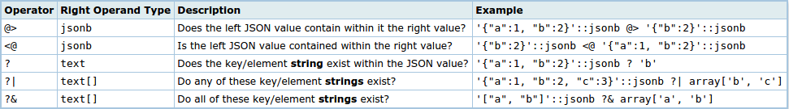

PostgreSQL
За что я люблю
Created by Yevhen Shemet
Source yevhene/presentation-postgresql
Что такое PostgreSQL
Свободная объектно-реляционная система управления базами данных.
История PostgreSQL
- Начало разработки 1986 год. Разрабатывалась как другой взгляд на InGres (1970) ее создателем. Название Postgres расшифровывается как post-Ingres.
- Изначально разрабатывался как открытый университетский проект University of California, Berkeley. Первый релиз 1989 год. MSSQL 1989, MySQL 1995
- 1994 год - выпущена под лицензией MIT. В 1996-м году отказались от внутреннего языка POSTQUEL. И приняли стандарт SQL. Что и отразили в названии PostgreSQL. Первая версия PostgreSQL 6.0
Сравнение
Бенчмарки
В большинстве своем спекулятивные. Драматического различия нет.
Популярно мнение что PostgreSQL реализация под Windows уступает MSSQL и PostgreSQL под Linux.
Популярность
Доступность
MySQL и PostgreSQL кросплатформенные.
MSSQL нет.
SQL
MSSQL и PostgreSQL поддерживают продвинутые фичи стандарта типа Windowing Functions и Common Table Expressions.
MySQL реализует ограниченую поддержку стандарта SQL.
Index
PostgreSQL может индексировать по функции. Также поддерживает разные алгоритмы индексирования.
MSSQL и MySQL поддерживают вычисляемые колонки.
Индексы PostgreSQL
Expression
CREATE INDEX users_name ON users (lower(name));
Hash
Позволяет использовать операторы:
- =
- равенство
B-Tree
Позволяет использовать операторы:
- <
- меньше
- <=
- меньше либо равно
- >
- больше
- >=
- больше либо равно
GiST
Generalized Search Tree
Это не определенный индекс, а инфраструктура которая позволяет реализовать разные стратегии индексированя для разных типов данных.- Фиксированной длинны
- Быстро строится и обновляется
- Дольше поиск
- Возможны вальшивие срабатывания
CREATE INDEX name ON table USING gist(column);
GIN
Generalized Inverted Index
Это не определенный индекс, а инфраструктура которая позволяет реализовать разные стратегии индексированя для разных типов данных.- Занимает больше места
- Медленно строится
- Быстрый поиск
- Точный поиск
CREATE INDEX name ON table USING gist(column);
Full-text
Create
CREATE TABLE texts (
content text,
index tsvector
);
Insert
INSERT INTO texts (content, tokens)
VALUES (
'fat cat ate fat rats',
to_tsvector('english', 'fat cat ate fat rats')
);
content | tokens
----------------------+-----------------------------------
fat cat ate fat rats | 'ate':3 'cat':2 'fat':1,4 'rat':5
Query
SELECT * FROM texts
WHERE tokens @@ to_tsquery('cat & !dog');
Index (GiST/GiN)
CREATE INDEX texts_content_index ON texts USING gin(tokens);
pg_trgmext
Строит триграммы
- Позволяет искать по схожести
- Можно использовать GiST/GiN индексы
- Можно использовать вместе с tsvector
SELECT show_trgm('Yevhen');
-------------------------------------
{" y"," ye","en ",evh,hen,vhe,yev}
fuzzysearchext
Превращает строку в код. Индексируется простым expression index.
Доступны разные алгоритмы: metaphone, dmetaphone, soundex.
SELECT dmetaphone('Elle Cahon'), dmetaphone('Yevhen Shemet');
------------+------------
ALKH | AFNX
Типы данных
geometry
Включает: point, box, lseg, line, path, polygon, circle.
Много встроеных функций и операторов.
Используя GiST можно оптимизировать операторы:
<< (Строго слева от), &< (Строго справа от), &> (Не расширяет вправо от), &< (Не расширяет влево от), <<| (Строго снизу), &<| (Не расширяет вниз), |&> (Не расширяет вверх), |>> (Строго сверху), ~ (Содержит), @ (Содержит в или на), ~= (Такое же как), && (Перекрывает), <-> (Расстояние между)
SELECT circle '((0,0),1)' << circle '((5,0),1)';
----------
t
array
CREATE TABLE tictactoe (
squares integer[3][3]
);
INSERT INTO tictactoe
VALUES ('{{1,2,3},{4,5,6},{7,8,9}}');
hstoreext
Поддерживает GiN и GiST индексы
SELECT 'a=>1,b=>2'::hstore;
--------------------
"a"=>"1", "b"=>"2"
json
Хранит проверенную копию исходного значения. Требует переразбора данных при каждом обращении
Можно использовать операторы:jsonbext
Поддерживает GiN индексХранит разобранные данные в двоичном виде
Можно использовать операторы: PostgreSQL и NoSQL
Изначальная схема
Оптимизированная схема
- Один запрос на создание/чтение/удаление
- Удобнее с точки зрения ORM (если есть поддержка)
- Я все еще могу использовать индексы и делать джоины почти без потерь по производительности
Вопрос
Теоретически мы можем использовать PostgreSQL как Document-Oriented NoSQL Database.
Почему не очень разумно говорить что PostgreSQL может вытеснить MongoDB или CouchDB?
Ответ

Procedural Languageext
PL/pgSQL
CREATE OR REPLACE FUNCTION fnsomefunc(numtimes integer, msg text)
RETURNS text AS $$
DECLARE
strresult text;
BEGIN
strresult := '';
IF numtimes > 0 THEN
FOR i IN 1 .. numtimes LOOP
strresult := strresult || msg || E'\n';
END LOOP;
END IF;
RETURN strresult;
END;
$$ LANGUAGE 'plpgsql';
SELECT fnsomefunc(10, 'Hello there');
PL/Python
CREATE FUNCTION pymax (a integer, b integer)
RETURNS integer AS $$
if a > b:
return a
return b
$$ LANGUAGE plpythonu;
PL/R
CREATE OR REPLACE FUNCTION r_median(_float8)
RETURNS float AS 'median(arg1)' LANGUAGE 'plr';
CREATE AGGREGATE median (
sfunc = plr_array_accum,
basetype = float8,
stype = _float8,
finalfunc = r_median
);
PL/PHP
CREATE FUNCTION get_username(integer)
RETURNS text AS $$
# Assign the query to a variable.
$query = "SELECT username FROM users WHERE id = " .$args[0];
# Run the query and get the $result object.
$result = spi_exec_query($query);
# Fetch the row from the $result.
$row = spi_fetch_row($result);
return $row['username'];
$$ LANGUAGE 'plphp';
PL/*
- PL/pgSQL
- PL/Python
- PL/Perl
- PL/Tcl
- PL/Java
- PL/PHP
- PL/Py
- PL/R
- PL/Ruby
- PL/Scheme
- PL/sh
Favorite features
MATERIALIZED VIEW
CREATE MATERIALIZED VIEW sales_summary AS
SELECT
seller_no,
invoice_date,
sum(invoice_amt)::numeric(13,2) as sales_amt
FROM invoice
WHERE invoice_date < CURRENT_DATE
GROUP BY
seller_no,
invoice_date
ORDER BY
seller_no,
invoice_date;
CREATE UNIQUE INDEX sales_summary_seller
ON sales_summary (seller_no, invoice_date);
REFRESH MATERIALIZED VIEW sales_summary;
UPSERT
INSERT INTO user_logins (username, logins)
VALUES ('Naomi', 1), ('James', 1)
ON CONFLICT (username)
DO UPDATE SET logins = user_logins.logins + EXCLUDED.logins;
username | logins
----------+--------
Lois | 2
Naomi | 1
James | 5
Large Object Streaming
PostGISext
Географические обьекты и локационные запросы
SELECT superhero.name
FROM city, superhero
WHERE ST_Contains(city.geom, superhero.geom)
AND city.name = 'Gotham';
Contrib
- Множество пакетов и расширений высокого качества
- Большинство бесплатные и open source
- Очень просто создавать расширения
Пример
#include "postgres.h"
#include "fmgr.h"
PG_MODULE_MAGIC;
PG_FUNCTION_INFO_V1(add_ab);
Datum add_ab(PG_FUNCTION_ARGS)
{
int32 arg_a = PG_GETARG_INT32(0);
int32 arg_b = PG_GETARG_INT32(1);
PG_RETURN_INT32(arg_a + arg_b);
}